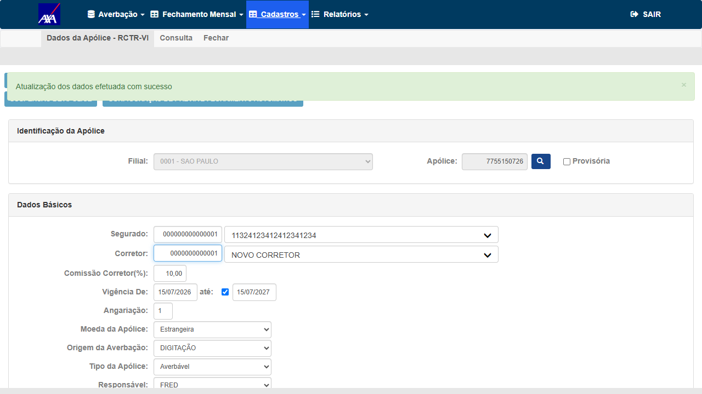
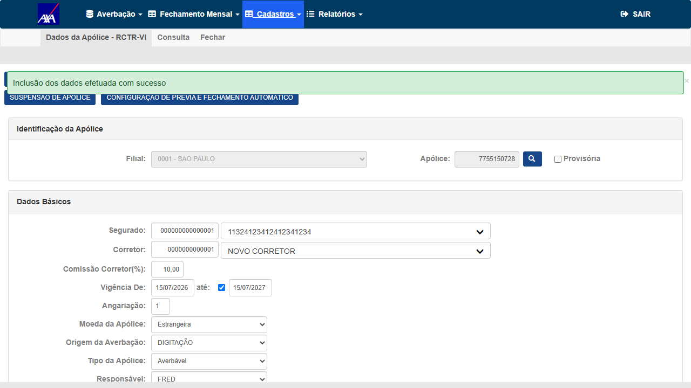
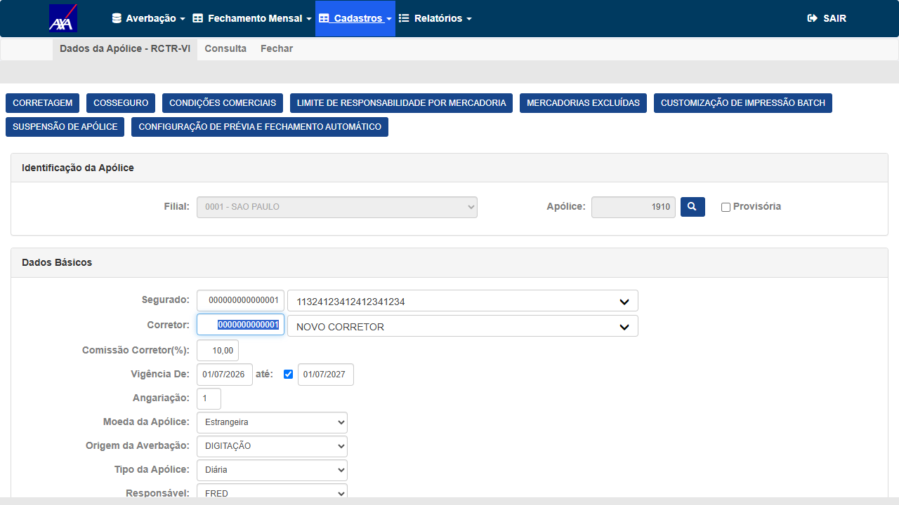
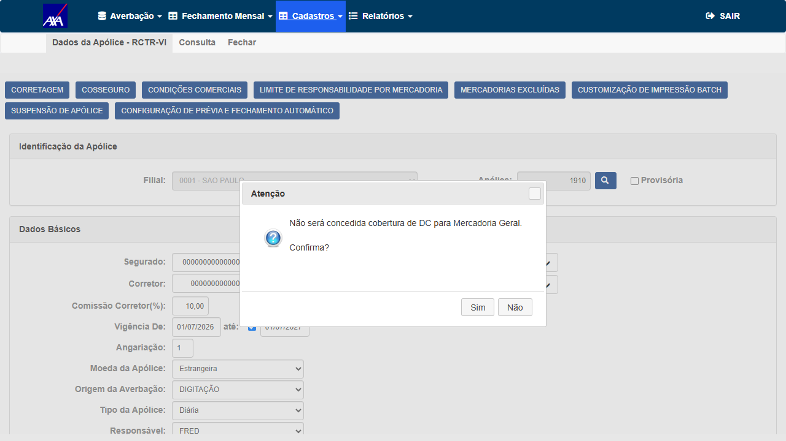
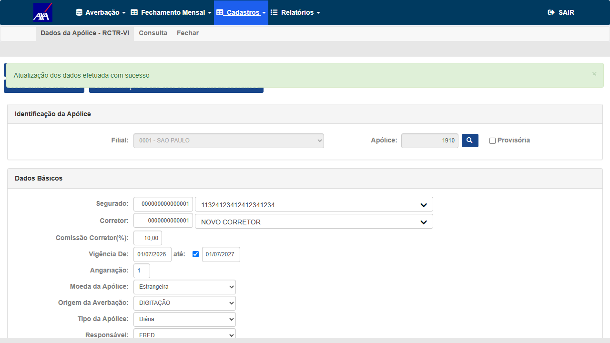
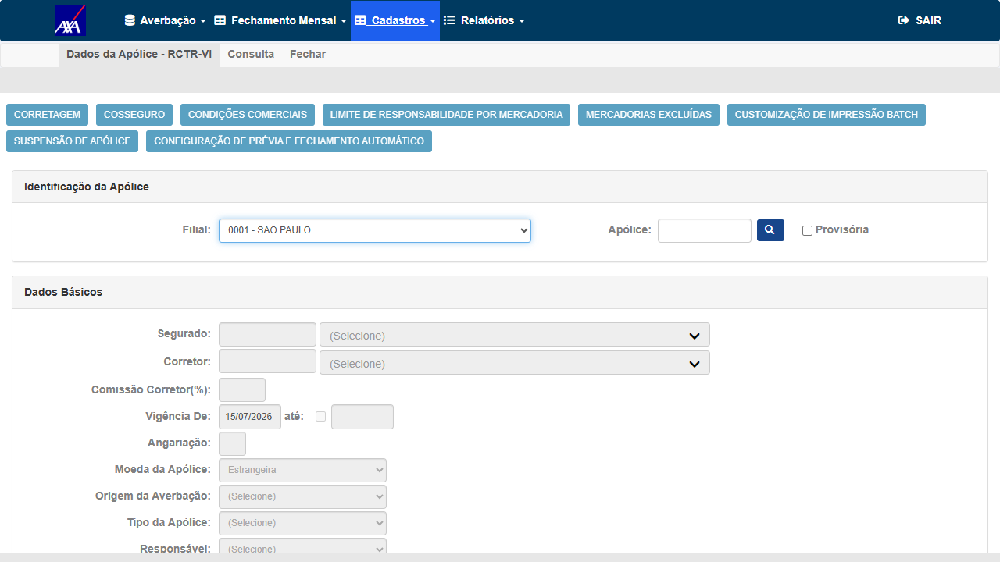

CT-RVI-001
Incluir apólice RCTR-VI nova deve exibir "Inclusão dos dados efetuada" e persistir a apólice
P1
APROVADO
▾
Tipo
Positivo — Cenário real do bug (inclusão de apólice nova). Não havia sido validado em 10/07 (que testou apenas atualização).
Pré-condições
- AXA CITWEB HML alfanum acessível:
https://axa-hml-faturamento.nsseg.com.br/alfa/
- Credenciais:
FRED / •••••• (senha no .env)
- Massa válida (descoberta via UI): Segurado código
1, Corretor código 1, Responsável FRED, Filial 0001 - SÃO PAULO
Passos
- Login FRED/DERF → menu Internacional → Cadastros → Apólice → RCTR-VI
- Digitar número de apólice inédito e clicar em pesquisar (habilita modo inclusão — botão "SALVAR")
- Preencher Segurado 1, Corretor 1, Comissão 10,00, Vigência 15/07/2026–15/07/2027, Angariação 1, Origem DIGITAÇÃO, Tipo Averbável, Responsável FRED, Dia Recebimento 15, Dia Emissão 20, Prazo Vencto 25, Forma Pagamento BOLETO, LMR 99.999.999,00, Complexidade 1
- Clicar em SALVAR e confirmar os diálogos de negócio "Não será concedida cobertura de DC..." (Sim)
- Verificar a mensagem de confirmação e a persistência (reabrir a tela e pesquisar o número)
Resultado Esperado
Após confirmar os diálogos, exibir "Inclusão dos dados efetuada com sucesso" e criar a apólice.
Resultado Obtido
✓ Mensagem "Inclusão dos dados efetuada com sucesso" exibida no iframe (capturada no DOM em 2 reproduções limpas). Apólices 7755150727 e 7755150728 criadas — persistência confirmada por reabertura: os dados retornam do banco e o botão passa a "ATUALIZAR".
✓ APROVADO — Inclusão RCTR-VI confirmada · AXA CITWEB alfanum HML · 15/07/2026

EV1 — Formulário de nova apólice RCTR-VI preenchido (Segurado, Corretor, Vigência, Tipo Averbável, FRED)

EV2 — Banner verde "Inclusão dos dados efetuada com sucesso" (apólice 7755150728)
CT-RVI-002
Atualizar apólice RCTR-VI existente deve exibir "Atualização dos dados efetuada com sucesso" (regressão)
P2
APROVADO
▾
Tipo
Regressão — Reproduz o cenário validado em 10/07 (salvar apólice já existente).
Pré-condições
- Apólice RCTR-VI existente:
1910 (Filial 0001 - SÃO PAULO, Segurado 1, Corretor 1, Tipo Diária)
Passos
- Menu Internacional → Cadastros → Apólice → RCTR-VI → pesquisar apólice
1910 (carrega em modo "ATUALIZAR")
- Selecionar Segurado/Corretor e clicar em ATUALIZAR
- Confirmar diálogos de negócio "Não será concedida cobertura de DC para Mercadoria Geral / Específica" (Sim)
- Verificar a mensagem de confirmação
Resultado Esperado
Exibir "Atualização dos dados efetuada com sucesso" após confirmar os diálogos.
Resultado Obtido
✓ Mensagem "Atualização dos dados efetuada com sucesso" exibida (banner verde full-width no iframe) após confirmar os 2 diálogos de cobertura DC.
✓ APROVADO — Atualização RCTR-VI confirmada · AXA CITWEB alfanum HML · 15/07/2026

EV1 — Apólice existente 1910 carregada (modo ATUALIZAR)

EV2 — Diálogo intermediário "Não será concedida cobertura de DC... Confirma?"

EV3 — Banner verde "Atualização dos dados efetuada com sucesso"
CT-RVI-003
Diagnóstico de ambiente — iframe / SignalR / jQuery carregam corretamente na tela RCTR-VI
P3
APROVADO
▾
Tipo
Diagnóstico — Isolar código vs. infraestrutura (nota de investigação do card sobre iframe/SignalR).
Passos
- Abrir a tela Internacional → Apólice → RCTR-VI
- Inspecionar o iframe do formulário (
dadosapolice/Default.aspx) via browser_evaluate
- Verificar
readyState, presença de jQuery e mensagens de console
Resultado Obtido
✓ Iframe do formulário carrega com readyState = complete; jQuery presente no iframe; botão de salvar e campos operacionais. Console apresenta apenas 9 erros 404 de imagens decorativas (.gif / ui-icons) — cosméticos, sem erro funcional. Ambiente saudável durante a execução manual.
✓ APROVADO — Ambiente funcionalmente saudável · AXA CITWEB alfanum HML · 15/07/2026

EV1 — Tela RCTR-VI carregada (iframe do formulário operacional)